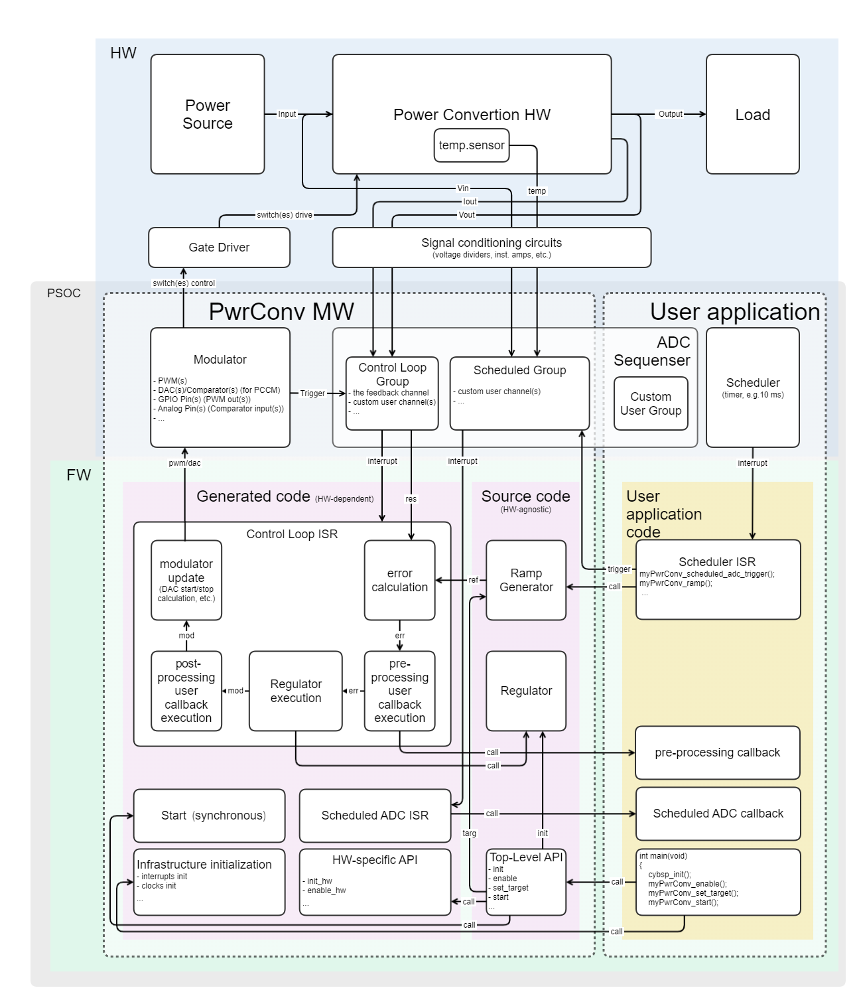
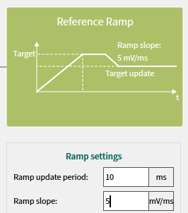

The Power Conversion Middleware provides a solid solution to design power convertors easily.
Features
- Configurable by the Power Conversion Configurator (PCC)
- Synchronous Buck Converter topology support
- Voltage-control (VCM) and Peak-current control (PCCM) modes support
- Multi-instance support (up to 4 instances)
- Multi-phase support (up to 4 phases)
- Auto-generated control loop and Custom (user-defined) control loop modes support
- Built-in 2p2z and 3p3z regulators
- Basic ramp generator
- Pre- and Post-processing user callbacks in the Auto-generated control loop mode
- Separately scheduled ADC sequencer group for the slow parameters
Glossary
- PCC - Power Conversion Configurator
- VCM - voltage control mode, firmware regulator directly controls the PWM pulse width value.
- PCCM - peak-current control mode, firmware regulator (outer control loop) control of the DAC slope value, a reference for the comparator (the inner HW control loop)
General Description
The Power Conversion Middleware consists of the device-agnostic top-level API source code, the power conversion library source code, and the solution personality. The solution personality:
- provides the integration with the Power Conversion Configurator and Device Configurator.
- calculates the regulator coefficients
- generates the power conversion regulator configuration code and device-specific HW configuration code
- generates the control loop ISR

Quick Start
Assume the power converter instance is named in the ModusToolbox™ Device Configurator as 'myPwrConv':
Then, the simplest way to use myPwrConv is to use generated myPwrConv API:
#include "cycfg.h"
void scheduler_callback(void)
{
}
int main(void)
{
init_cycfg_all();
__enable_irq();
(void) Cy_SysTick_SetCallback(0UL, scheduler_callback);
Cy_SysTick_Enable();
while (true);
}
void myPwrConv_ramp(void)
Drives the Ramp Generator.
cy_rslt_t myPwrConv_get_state(uint32_t mask)
Returns the Power Converter instance current state.
cy_rslt_t myPwrConv_set_target(uint32_t targ)
Applies a new target for the Ramp Generator.
cy_rslt_t myPwrConv_enable(void)
Enables the Power Conversion Control System.
cy_rslt_t myPwrConv_start(void)
Starts the Power Conversion instance.
#define MTB_PWRCONV_STATE_RAMP
The ramping flag, indicates that the converter currently is changing the reference value smoothly to ...
Definition: mtb_pwrconv.h:233
Infineon Control Loop
The whole control loop including the regulator is generated by the personality. The control loop consists of:
Infineon Control Loop Callbacks
To use the pre- or/and post-process callbacks, the callback itself should be declared at the application level, the corresponding feature should be enabled in the PCC tool Controller tab:
and the callback name should be passed into the Device Configurator GUI:
To make these callbacks faster, they can be declared as inline functions in header file - in this case the header file name should be also passed into the Device Configurator GUI, as shown above.
And then in the myHeader.h:
__STATIC_INLINE void myPwrConv_pre_process_callback(void)
{
static int32_t error = 0;
error = error / 2 + myPwrConv.ctx->err / 2;
myPwrConv.ctx->err = error;
}
- Note
- For non-inline callbacks there is no need to update the 'Header file name' parameter - it can be left empty (by default).
Custom Control Loop
In the Custom Control Loop mode:
- there is no dedicated feedback ADC channel defined in the Control Loop ADC Group - all the channels are equally 'custom'. Therefore, the error mtb_stc_pwrconv_ctx_t::err is not being calculated in the Control Loop ISR (unlike in the Infineon Control Loop mode). It is the user's task to define the controlled value(s) and to perform the feedback processing and regulation.
- the custom control loop callback is being called instead of the default (Infineon Control Loop mode) bult-in regulator with pre-/post-process callbacks.
- the modulator update with the mtb_stc_pwrconv_ctx_t::mod value works exactly like in the Infineon Control Loop mode.
- the myPwrConv_set_target function is transparent - the reference value nominally equals to the target value, without any min/max limitations nor recalculations, because the target is not predefined by the solution itself - it should be defined by user at the application level.
For example to use the inline custom callback, the callback name and the header file name should be entered into the Device Configurator:
And then in the myCustom.h: __STATIC_INLINE void myPwrConv_custom_callback(void)
{
static float32_t modAvg = 0.0;
modAvg = (modAvg < myPwrConv_SLOPE_START_MIN) ? myPwrConv_SLOPE_START_MIN :
(modAvg > myPwrConv_SLOPE_START_MAX) ? myPwrConv_SLOPE_START_MAX : modAvg;
myPwrConv.ctx->mod = (int32_t)modAvg;
}
__STATIC_FORCEINLINE uint32_t myPwrConv_Vout_get_result(void)
Gets the ADC channel result in raw counts.
__STATIC_FORCEINLINE int32_t myPwrConv_get_error(uint32_t result)
Calculates the error value from the feedback and reference values.
Scheduled ADC Group
To optimize the control loop timing, some ADC measurements can be performed not in the control loop ADC sequencer group, but in the separate scheduled ADC group (configurable in the PCC tool ADC tab):
which is being periodically triggered by the myPwrConv_scheduled_adc_trigger function. When the scheduled ADC group measurement is done - it rises interrupt which calls the scheduled user callback, which name also should be passed into the Device Configurator GUI:
And implemented in the application code:
void scheduler_callback(void)
{
}
void myPwrConv_scheduled_adc_callback(void)
{
if (myPwrConv_Temp_MAX < myPwrConv_Temp_get_result())
{
}
}
void myPwrConv_scheduled_adc_trigger(void)
Triggers the scheduled ADC group.
cy_rslt_t myPwrConv_disable(void)
Disables (stops) the Power Conversion Control System.
Modulation modes
VCM
Voltage control modulation mode - the simple PWM, where the pulse width is directly controlled by the 3P3Z regulator (in the Infineon Control Loop mode). Supports both high resolution and regular resolution TCPWM modes (configurable in the PCC tool)
PCCM
Peak-Current control mode is the advanced modulation method which consists of two loops:
- the inner HW inductor current control loop
- the outer FW 2P2Z regulator (in Infineon control loop mode) which controls the PCCM's comparator reference (DAC slope):
Ramp Generator
The PwrConv middleware provides a simple ramp generator - the mtb_pwrconv_ramp function which should be called by a periodical event (e.g. some timer ISR/callback, the timing is important to be determined and stable):
#include "cycfg.h"
void scheduler_callback(void)
{
}
int main(void)
{
init_cycfg_all();
__enable_irq();
(void) Cy_SysTick_SetCallback(0UL, scheduler_callback);
Cy_SysTick_Enable();
while (true);
}
The ramp generator updates the mtb_stc_pwrconv_ctx_t::ref value so that it always moves towards the mtb_stc_pwrconv_ctx_t::targ value with the steps defined by mtb_stc_pwrconv_t::rampStep based on Ramp update period and Ramp slope parameters configurable in the PCC tool:

Synchronous Start
When there are multiple instances with the same switching frequencies, there might be a need to start them simultaneously with specified phase shift, to avoid the control loop execution overlapping. In this case the 'Initial phase' parameter could be used:
in conjunction with a generated pwrconv_start() function (common for all the instances) instead of regular instance-based [instance_name]_start() functions:
cy_rslt_t pwrconv_start(void)
Starts all the Power Conversion instances in the project synchronously.
Multi-Phase
The multiple interleaved conversion phases allows to divide a total power between multiple parallel power circuits (switches, inductors) for better heat dissipation, reliability, and power density of the converter. Also, in terms of EMC the multi-phasing method lowers magnitude and spreads the spectrum of both the electromagnetic emissions and the voltage/current ripples on power lines. The PwrConv Buck topology allow up to 4 phases (in both VCM and PCCM modes) controlled by the same FW regulator (configurable in the PCC tool)